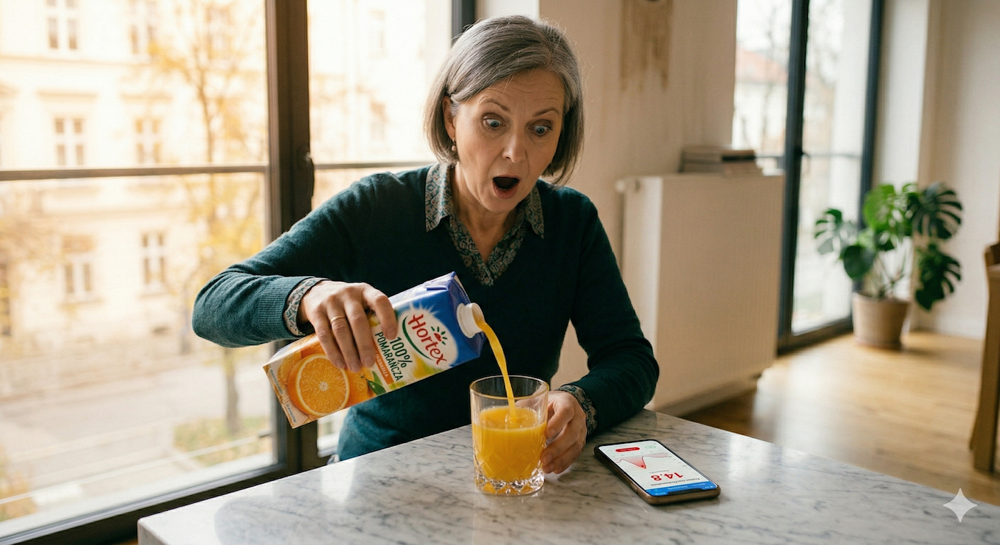
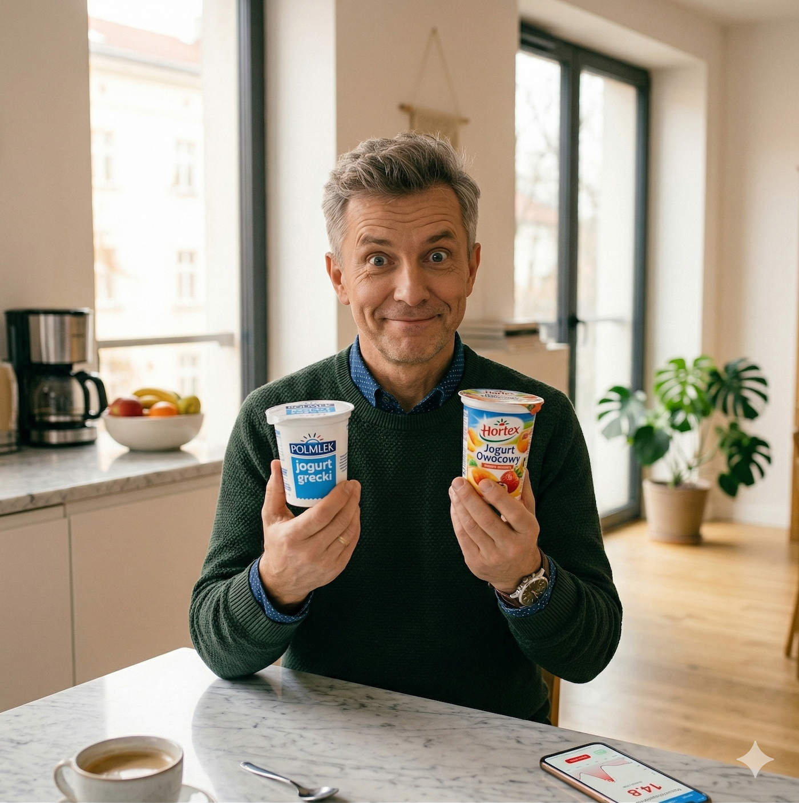
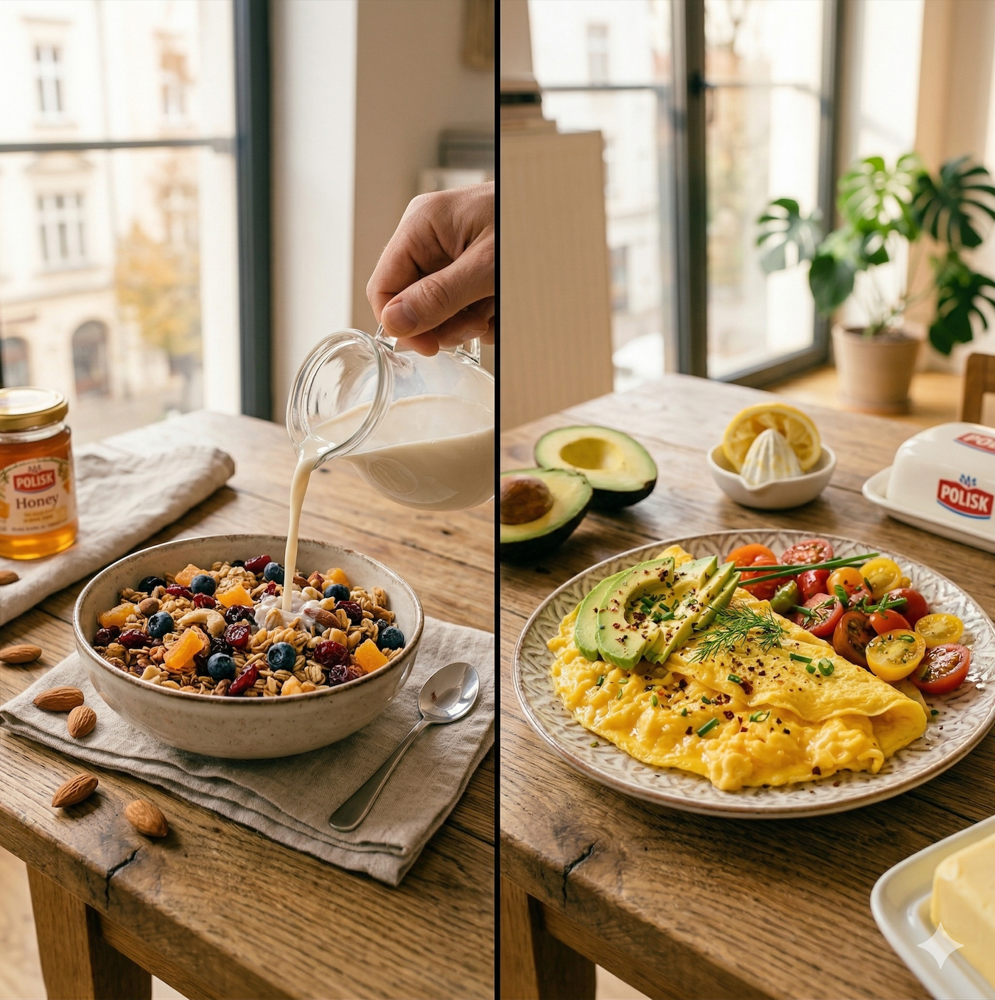

Masz za sobą tydzień treningu. Spałeś dobrze. Jesz, jak Ci się wydaje, całkiem sensownie — rano sok pomarańczowy, w ciągu dnia jogurt ze zbożami, wieczorem baton proteinowy. Bo przecież białko. I nic. Waga stoi w miejscu, siła nie przyrasta, a po południu ciągniesz się jak po nocnej zmianie.
Odpowiedź może Cię zaskoczyć. Problem nie leży w treningu. Problem leży w tym, co uważasz za zdrowe jedzenie. Po pięćdziesiątce Twój organizm przetwarza cukier inaczej — i kilka produktów, które przez lata uchodziły za fit, robi Ci realną krzywdę. Bez przesady. Bez histerii. Po prostu biologia.

Po 50-tce Twój organizm przetwarza cukier inaczej — dosłownie
Nie chodzi o to, że nagle stałeś się chory. Chodzi o biologię. Po pięćdziesiątce wrażliwość na insulinę — czyli zdolność organizmu do sprawnego przetwarzania cukru — naturalnie spada. Badania z American Journal of Physiology potwierdzają: nietolerancja glukozy rośnie z wiekiem liniowo. Twój metabolizm biegnie wolniej, zanim w ogóle zdążysz to zauważyć.
W praktyce oznacza to jedno: ta sama szklanka soku, która w wieku 30 lat przeszła przez Ciebie bez śladu, teraz wywołuje znacznie silniejszy skok poziomu cukru we krwi — a za nim skok insuliny. Insulina mówi komórkom: bierzcie cukier i magazynujcie. Zbyt dużo insuliny = organizm przechodzi w tryb odkładania, nie spalania. I co ważne: ta sama insulina jednocześnie hamuje spalanie tłuszczu o około 50% przez kilka godzin po skoku. Możesz ćwiczyć, a ciało i tak nie ruszy zapasów.
MIT: Produkty oznaczone jako naturalne lub owocowe nie podnoszą cukru tak jak słodycze.
RZECZYWISTOŚĆ: Forma, w jakiej cukier trafia do organizmu, ma znaczenie większe niż jego źródło. Sok pomarańczowy i cola mają zbliżony profil glikemiczny. Etykieta z zachodem słońca nie zmienia biochemii.
Ciekawostka
Insulina wyrzucona po szklance soku pomarańczowego hamuje spalanie tłuszczu o ok. 50% przez kolejne 2–3 godziny. Trenujesz w tym czasie? Twoje mięśnie pracują, ale rezerwy tłuszczowe są na kłódce.
Sok pomarańczowy i jogurt owocowy — klasyki, które sabotują trening
250 ml soku pomarańczowego to 23 gramy cukru i zero gramów błonnika. Tyle samo co w puszce Pepsi. Różnica jest taka, że Pepsi nikt nie nazywa zdrowym napojem. Błonnik jest kluczowy, bo spowalnia wchłanianie cukru do krwi. Cała pomarańcza ma 3 gramy błonnika i 12 gramów cukru — i jej cukier wchodzi do krwi powoli, kontrolowanie. Sok bez błonnika trafia tam w 15 minut.
Jogurt owocowy to drugi klasyk. Wyciągasz go z lodówki bo zdrowo, bo wapń, bo probiotyki. I jogurt może być świetny. Tyle że słodzony jogurt owocowy to najczęściej deser udający śniadanie. Analiza opublikowana w Nutrition Research pokazuje, że jeden pojemnik może zawierać do 22 gramów cukru — większość dodana podczas produkcji. Jogurt grecki naturalny: 4 gramy. Różnica 18 gramów to mniej więcej 4 kostki czekolady mlecznej.
MIT: Jogurt owocowy to zdrowe śniadanie bogate w probiotyki i wapń.
RZECZYWISTOŚĆ: Probiotyki w słodzonym jogurcie owocowym są często w zbyt małej ilości, żeby mieć realny efekt. Za to cukier jest w ilości, która natychmiast skacze — i owszem, robi robotę. Tyle że nie tę, o którą chodzi.

Zamiana, która nic nie kosztuje
Zamień jogurt owocowy na jogurt grecki naturalny + garść malin lub borówek. Dostaniesz probiotyki, wapń i białko — ale bez 18 gramów dodanego cukru. Smak prawie identyczny. Efekt metaboliczny — zupełnie inny.
Granola i baton proteinowy — marketing kontra rzeczywistość
Granola brzmi jak produkt dla ludzi, którzy wstają o szóstej i jedzą świadomie. I takie jest jej opakowanie. Ale skład mówi co innego: płatki owsiane, syrop kukurydziany, miód, suszone owoce, czekolada. Badacze z Frontiers in Endocrinology zaliczają takie mixy do produktów mocno skaczących glukozę. 50 gramów granoli z mlekiem owsianym to bomba cukrowa na start dnia. Po 90 minutach masz ochotę na kolejny posiłek, bo cukier spada równie gwałtownie jak wzrósł.
Baton proteinowy bierzesz, bo białko. Bo 20 gramów protein na opakowaniu. Ale zajrzyj dalej w skład: syrop kukurydziany wysokofruktozowy, dekstroza, maltodekstryna. To różne nazwy na to samo — szybki cukier. Ironicznie, wiele batonów fitness zawiera więcej cukrów niż jogurt truskawkowy, który przynajmniej nie udaje czegoś innego.
MIT: Mleko owsiane jest zdrowsze od krowiego.
RZECZYWISTOŚĆ: Mleko owsiane jest bogate w skrobię, która przy trawieniu szybko zamienia się w glukozę — szybciej niż mleko krowie. Dla osób po 50-tce z obniżoną wrażliwością na insulinę może to być problem. Lepsza alternatywa: mleko migdałowe niesłodzone lub lniane, które mają znacznie lepszy profil glikemiczny.

Zasada składu
Jeśli lista składników ma więcej niż 10 pozycji i zawiera słowa, których nie rozumiesz — odłóż na półkę. Dobra żywność ma krótki skład. To nie jest snobizm — to praktyczny filtr.
Co naprawdę kryje się w tych produktach — liczby, które mówią więcej niż etykieta
Zebraliśmy dane z USDA FoodData Central, analiz Nutrition Research i badań Mayo Clinic Press — i wyszło z tego dość nieprzyjemna tabela. Szklanka soku: 23 g cukru, 0 g błonnika. Jogurt owocowy: 17–22 g cukru, 0 g błonnika. Granola (50 g): 12–18 g cukru, 2 g błonnika. Mleko owsiane (250 ml): 16 g cukru, 2 g błonnika. Baton proteinowy: 14–20 g cukru, 3 g błonnika. Dla porównania — cała pomarańcza: 12 g cukru, 3 g błonnika. Jogurt grecki naturalny: 4 g cukru, 0 g błonnika. Orzechy (30 g): 2 g cukru, 2 g błonnika.
Kluczowy wniosek jest jeden: błonnik to hamulec dla cukru. Gdy cukier trafia do organizmu razem z błonnikiem, białkiem lub tłuszczem — wchłania się wolno, nie wywołuje skoku insuliny i nie przełącza metabolizmu w tryb magazynowania. Gdy trafia sam — efekt jest odwrotny. To dlatego cała pomarańcza i jogurt grecki są w tej samej kategorii kalorycznej co ich odpowiedniki, ale mają zupełnie inny wpływ na Twój organizm po 50-tce.
Ciekawostka: Ćwiczenia siłowe poprawiają wrażliwość na insulinę tak skutecznie jak niektóre leki. Badanie z Sports Medicine cytowane przez NIH pokazuje, że poprawa metabolizmu glukozy po regularnym treningu siłowym u osób po 50-tce jest porównywalna z efektem farmakoterapii — bez recepty i bez skutków ubocznych.
Skrócona tabela
Szklanka OJ: 23 g cukru, 0 g błonnika
Jogurt owocowy: 17–22 g cukru, 0 g błonnika
Granola (50 g): 12–18 g cukru, 2 g błonnika
Cała pomarańcza: 12 g cukru, 3 g błonnika ✅
Jogurt grecki naturalny: 4 g cukru, 0 g błonnika ✅
Orzechy (30 g): 2 g cukru, 2 g błonnika ✅
Co jeść zamiast tego — trzy zasady bez histerii i bez liczenia kalorii
Nie musisz liczyć kalorii, rezygnować z kawy ani zamieniać lodówki w laboratorium. Potrzebujesz trzech zmian. Pierwsza: błonnik do każdego posiłku. Warzywa, cały owoc zamiast soku, kasze, orzechy — spowalniają wchłanianie cukru z reszty posiłku. Gdy masz przy posiłku błonnik i białko, ten sam cukier zachowuje się zupełnie inaczej niż solo. Druga: białko rano. Jajka, jogurt grecki, twaróg, łosoś, orzechy. Stabilizuje poziom cukru przez następne kilka godzin. To nie teoria — to doświadczenie każdego, kto próbował przez tydzień.
Trzecia: ruch po jedzeniu — chociaż 10 minut. Spacer, schody, rowerek. Mięśnie podczas ruchu biorą glukozę bezpośrednio, bez udziału insuliny. Badania pokazują, że 10–15 minut spaceru po posiłku redukuje skok cukru o nawet 35%. Nie trening. Ruch. To jedno z najpotężniejszych narzędzi regulacji metabolizmu, jakie istnieją — i nie kosztuje nic poza kwadransem.
Trzy konkretne zamiany na dobry początek: sok pomarańczowy zamieniasz na całą pomarańczę lub wodę z cytryną; jogurt owocowy na jogurt grecki naturalny z garścią malin; granolę lub baton na jajka, twaróg, orzechy albo plasterek awokado. I po każdym większym posiłku — 10–15 minut ruchu. Za miesiąc możesz zacząć czuć różnicę. Nie dlatego że jesz mniej. Dlatego że Twój organizm dostaje paliwo, które potrafi sprawnie przetworzyć.
Mocny konkret
10–15 minut spaceru po posiłku redukuje skok cukru o nawet 35%. Mięśnie podczas spaceru pobierają glukozę bezpośrednio, bez insuliny. To najprostsze i najtańsze narzędzie metaboliczne, jakie masz.
Szybkie odpowiedzi (Q&A)
Dlaczego sok pomarańczowy jest niezdrowy po 50-tce?
Sok pomarańczowy zawiera 23 g cukru i 0 g błonnika na szklankę — niemal tyle samo co cola. Bez błonnika cukier trafia do krwi błyskawicznie, wywołując skok insuliny. Po pięćdziesiątce wrażliwość na insulinę naturalnie spada, więc ten skok jest silniejszy i trwa dłużej. W efekcie organizm przełącza się w tryb magazynowania i hamuje spalanie tłuszczu na kilka godzin — nawet jeśli ćwiczysz.
Czy jogurt owocowy jest zdrowy?
Słodzony jogurt owocowy to najczęściej deser udający śniadanie. Może zawierać do 22 g cukru, z czego większość to cukier dodany podczas produkcji. Jogurt grecki naturalny zawiera tylko 4 g cukru, za to znacznie więcej białka. Jeśli chcesz smaku owocowego, dodaj świeże owoce samodzielnie.
Co zamiast granoli na śniadanie po 50-tce?
Granola to wysokoglikemiczny mix, który po 90 minutach zostawia Cię głodnym. Lepsze opcje to: jajka (gotowane, jajecznica, omlet), jogurt grecki naturalny z owocami, twaróg z orzechami lub chleb pełnoziarnisty z awokado i jajkiem. Kluczowe: śniadanie z białkiem stabilizuje poziom cukru na kilka następnych godzin.
Jak ruch wpływa na poziom cukru po posiłku?
10–15 minut spaceru po posiłku redukuje skok cukru we krwi o nawet 35%. Mięśnie podczas ruchu pobierają glukozę bezpośrednio, bez udziału insuliny. Trening siłowy robi to samo, tylko mocniej i na dłużej — poprawia wrażliwość na insulinę na wiele godzin po sesji.
Czy batony proteinowe są zdrowe dla osób po 50-tce?
Większość batonów proteinowych zawiera 14–20 g cukru ukrytego pod nazwami: syrop kukurydziany, dekstroza, maltodekstryna. To szybkie cukry, które wywołują skok glukozy pomimo pozornie dużej ilości białka. Lepsze alternatywy to garść orzechów, twaróg lub jogurt grecki naturalny — dają białko bez cukrowego spiku.
W skrócie
- Po 50-tce wrażliwość na insulinę naturalnie spada, co sprawia, że te same produkty wywołują silniejszy skok cukru niż wcześniej.
- Sok pomarańczowy, jogurt owocowy, granola i batony proteinowe mogą blokować spalanie tłuszczu — nawet przy regularnym treningu.
- Błonnik spowalnia wchłanianie cukru: cała pomarańcza i jogurt grecki naturalny to lepsze wybory niż ich przetworzone odpowiedniki.
- 10–15 minut spaceru po posiłku redukuje skok glukozy o nawet 35%.
- Trzy kluczowe zamiany: sok na cały owoc, jogurt owocowy na grecki naturalny, granola na śniadanie białkowo-tłuszczowe.
- Zmiany metaboliczne po 50-tce są biologicznie normalne — dieta i ruch mogą je skutecznie kompensować bez rewolucji.
Źródła
- Ryan AS. Insulin resistance with aging: effects of diet and exercise. Sports Med. 2000.
- High orange juice consumption and energy balance. PMC5916905.
- Raw orange vs fresh OJ vs nectar — effects on blood glucose. PMC6770506.
- American Journal of Physiology-Endocrinology: aging and insulin secretion.
- Frontiers in Endocrinology: sweeteners, muesli, granola and blood glucose spikes.
- USDA FoodData Central — dane żywieniowe.
- Mayo Clinic Press — oat milk, blood sugar and metabolic effects.
- NIH / NIA — insulin resistance and aging.